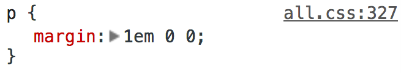
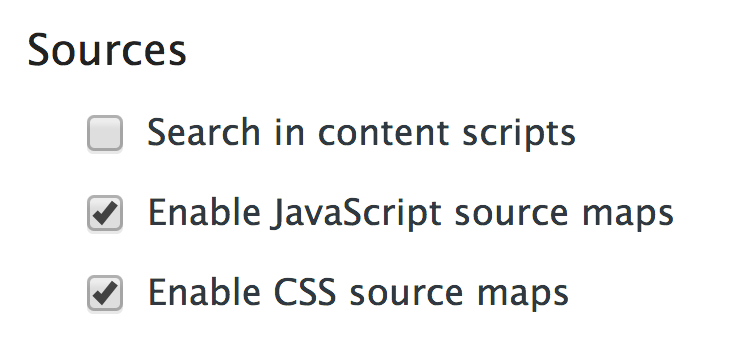
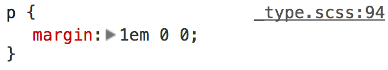

It drastically reduces the utility of the web inspector
The web inspector is a debugging tool built into the browser for web development
The web inspector reports irrelevant filenames and line numbers
All you need now is to enable CSS source maps in Chrome
So now when we look at the web inspector, it returns much more useful information
